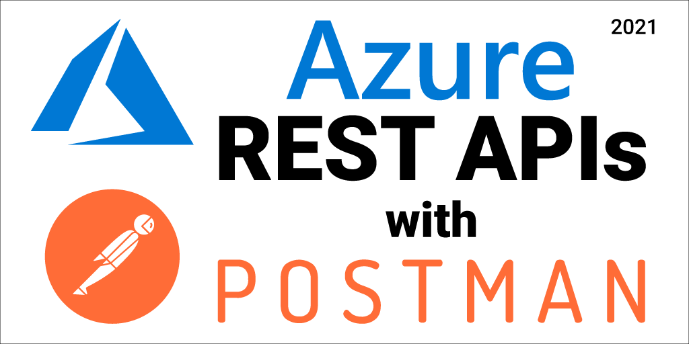
Every year or so I do an Azure REST APIs with Postman blog and video. It’s 2021 and Postman has changed quite a bit since my last update, so here’s the latest and greatest info.
Azure SDKs
Before we go too far into this Azure REST APIs for Postman 2021 edition blog post, I want to make sure that you know you don’t need to use the Azure REST APIs to interact with Azure resources. So many people have reached out to me over the years asking for Azure REST help who didn’t know we have SDKs in many languages, including .NET, Python, Java, JavaScript/TypeScript, Go, C++, C, Android, iOS, PHP, and Ruby - and that they work across operating systems - and are available in their favorite package managers. In my opinion, if you don’t mind taking on the dependency of the Microsoft supported library, then it sure beats building the libraries yourself. Also, the new Azure SDKs include features like logging, retries, and are fully supported by a sizable team at Microsoft.
I understand if you want to use the REST APIs directly, but I just want you to know that the libraries exist as well.
You can find the libraries here: https://azure.com/sdk and a 3 min “Introducing the Azure SDKs” video here: https://aka.ms/azsdk/intro and all the source for the libraries can be found here: https://github.com/azure/azure-sdk
Azure REST APIs for Postman 2021 Video
I created a short 6 minute video that brings you through this post step-by-step. Feel free to open up that video and follow along with this post:
Postman
Postman is a tool that enables you to call the Azure REST APIs via a graphical interface. You can install it here: Download Postman. We are using Postman v8.0.5 for this post.
Azure CLI
The Azure CLI is a command line tool that allows you to manage and interact with Azure resources, including the ability to get the necessary accounts and tokens required to call the Azure REST APIs. We’ll use it to create a service principal, which will be used to get the tokens we need to make Azure REST API requests.
Installation
You can either use the Azure Cloud Shell or install the Azure CLI locally.
Cloud Shell
The Azure Cloud shell is an in-browser terminal interface that allows you to execute Azure CLI commands without installing the Azure CLI locally.
Azure CLI Local Install
- Install the Azure CLI
- Login with
az login - Select your active Azure subscription with
az account set -n {name of your sub}
Authentication
Azure REST API authentication is done via a Bearer token in the Authentication header. We’ll use a service principal to get that token for us. A service principal is an Azure account that allows you to perform actions on Azure resources. Think about it like a system account that you can assign roles to and get tokens with. You can optionally read all about Service Principals here: Applications and service principals. Note that there are other ways to authenticate with the Azure REST APIs, but in this post we will only cover the Bearer token and service principal approach. You can research all the various ways to authenticate with the Azure REST APIs here: Azure REST API Authentication.
We first need to create the service principal with the following Azure CLI command:
az ad sp create-for-rbac --role Contributor
This will output the information you need to setup Postman - you will need it later, so save it to a safe location.

{
"appId": "798256c4-bbdc-4f7a-a20a-",
"displayName": "azure-cli-2021-02-10-22-47-08",
"name": "http://azure-cli-2021-02-10-22-47-08",
"password": "",
"tenant": "72f988bf-86f1-41af-91ab-"
}
Postman Setup
Now that we have the service principal created, it is time to configure Postman.
I created this sample collection to help you get started. Click on the following “Run in Postman” button to open that collection.

Here’s the direct link, just in case that button doesn’t work for you: https://aka.ms/azurerestpostmancollection
- Choose “Postman for Windows”
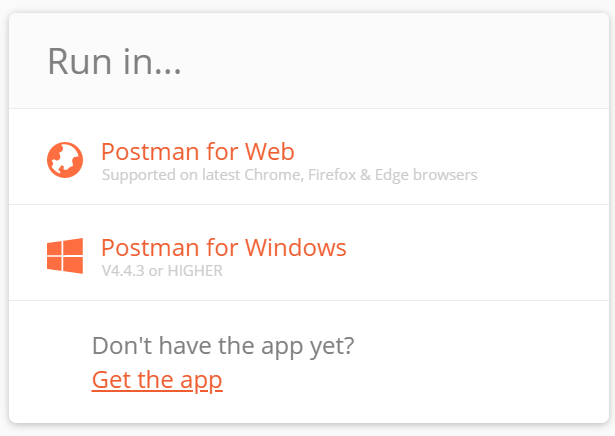
- Choose the workspace you want to import the Azure REST 2021 collection into.
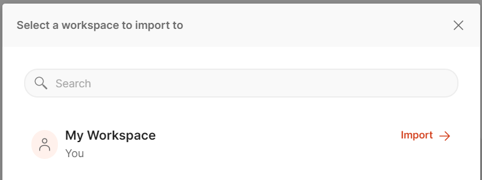
- You will now see the Azure REST 2021 collection in Postman.
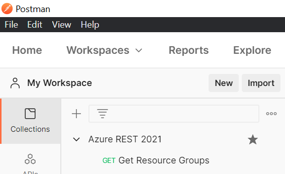
Variables
Postman allows you to set variables at various levels, you can read all about variables and scopes here: Postman: Using variables. In this example, we’ll use “Collection level” variables.
Click on the collection name, and then click on the “Variables” tab, you’ll see the variables that need to be set in order to get the token for each Azure REST API call.
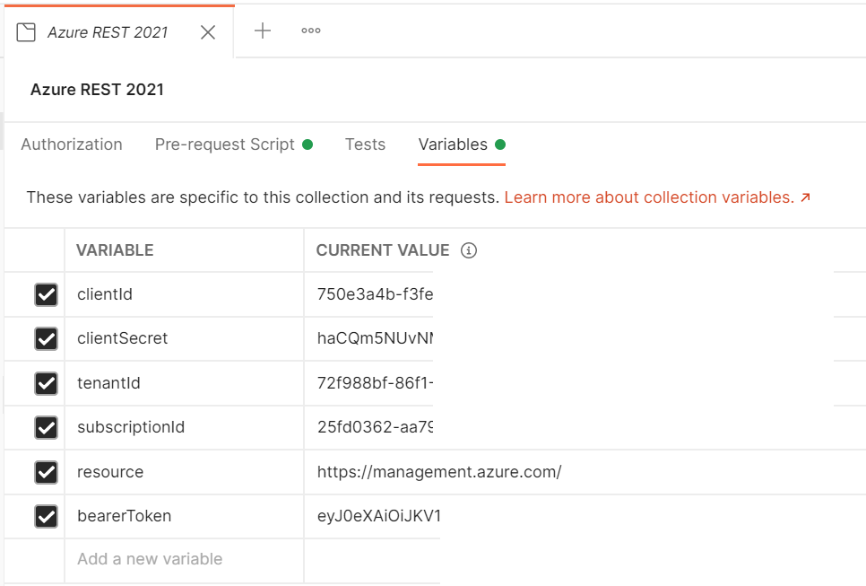
Go through and set each of these variables based on the “Notes” column below.
| Variable Name | Current Value | Notes |
|---|---|---|
| clientId | This is the value of appId from the service principal creation output above. |
|
| clientSecret | This is the value of password from the service principal creation output above. |
|
| tenantId | This is the value of tenantId from the service principal creation output above. |
|
| subscriptionId | You can get this with this Azure CLI command az account show --query id -o tsv |
|
| resource | https://management.azure.com/ | The default value is for managing Azure resources. |
| bearerToken | This is generated by the Pre-request script below. You do not need to set this. |
VERY IMPORTANT: Make sure you click the “Save” button after you have set all your variables!

Pre-request Script
You don’t need to do anything here, just including it so you know what is going on.
Click on the collection name, then click on the “Pre-request Script” tab. You’ll see the code we use to generate the Bearer token needed with each Azure REST API call.
Here’s that code if you ever need it:
Authorization
You don’t need to do anything here, just including it so you know what is going on.
Click on the collection name, then click on the “Authorization” tab. You’ll see that we have selected “Bearer Token” and entered the value of {{bearerToken}}. This will automatically add the Authorization: Bearer {{bearerToken}} value to each request within the collection. So when you add a new request you don’t have to set that header of the request.
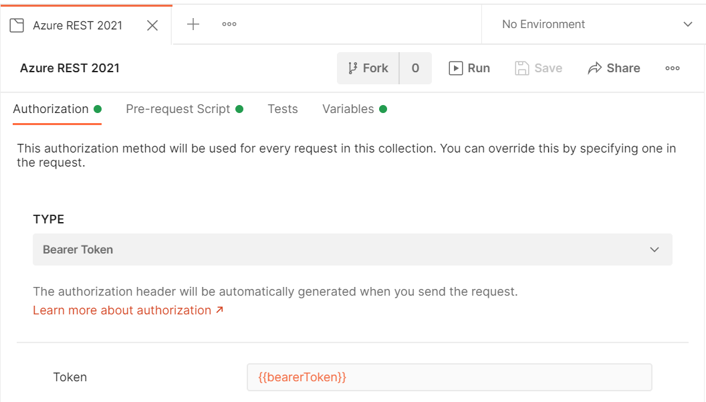
Execute “Get Resource Groups” Request
It is now time to execute our first request. I included a sample “Get Resource Groups” request in the collection.
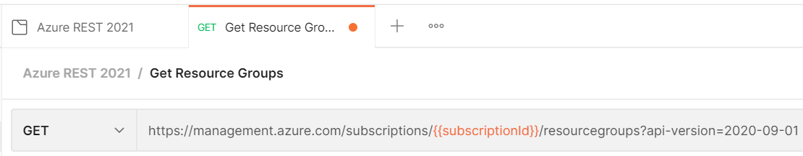
Click on that request, and then click the blue “Send” button.
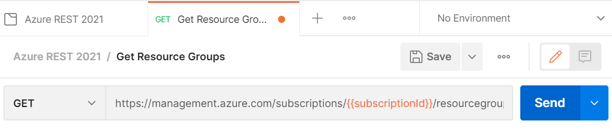
You will then see the output of all your resources groups in the response pane.
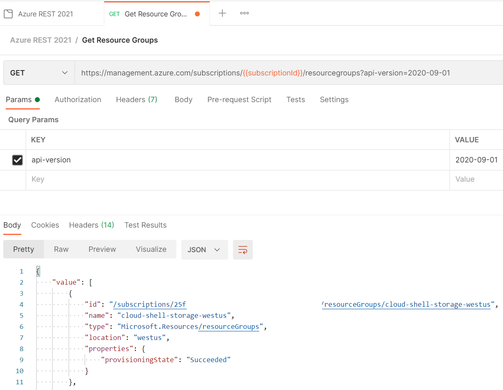
Execute “Create Resource Group” Request
You just saw how we can execute a simple GET request. Here’s how to do a PUT to create a resource group. You can find the full docs for the Resource Group, and all the other Azure REST APIs here: Resource Groups - Create Or Update
Click on the “Create Resource Group” request.
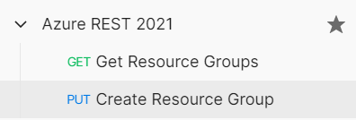
You will notice that we change the HTTP VERB to PUT and added the resource group name to the URL.
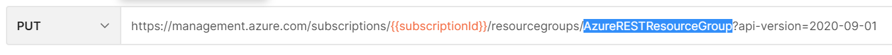
We also added a body to supply the location, which is required for this request.
In order to set the body you need to do the following:
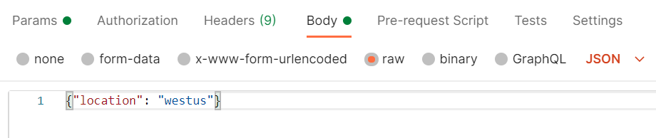
- Click on the “Body” tab under the request URI
- Select the “Raw” radio button.
- Select “JSON” in the Content-Type dropdown
- Enter the JSON body into the Body textbox:
{"location": "westus"}
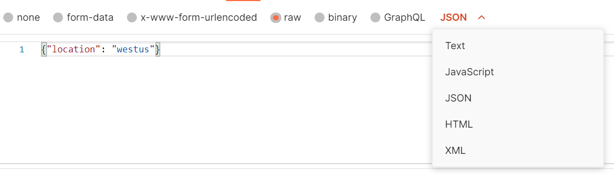
All parameters for all requests can be found in the Azure REST documentation.
Now you can click the blue “Send” button and then see the output in the response output pane:
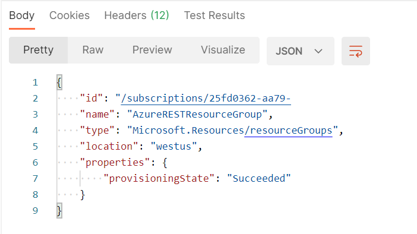
Conclusion
That’s my Azure REST with Postman 2021 update. I hope you found this helpful. Please leave a comment and share with your friends.
Thanks,
Jon